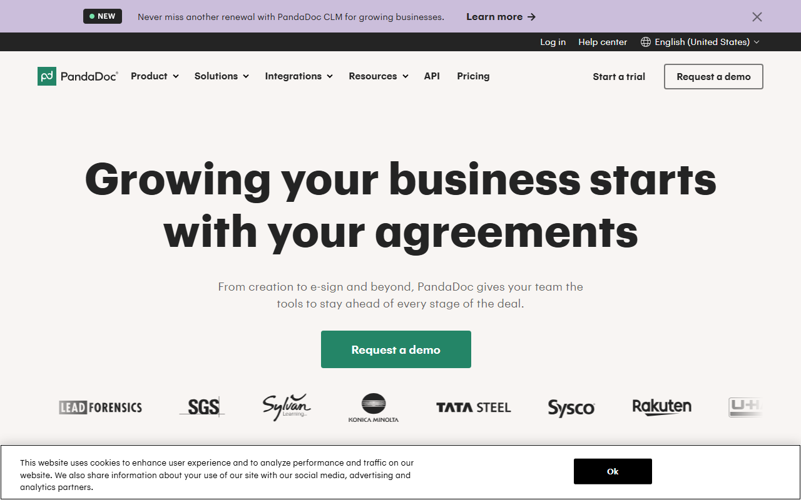
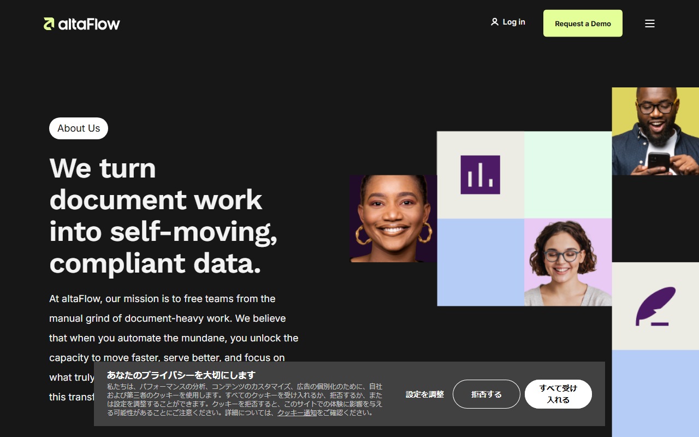
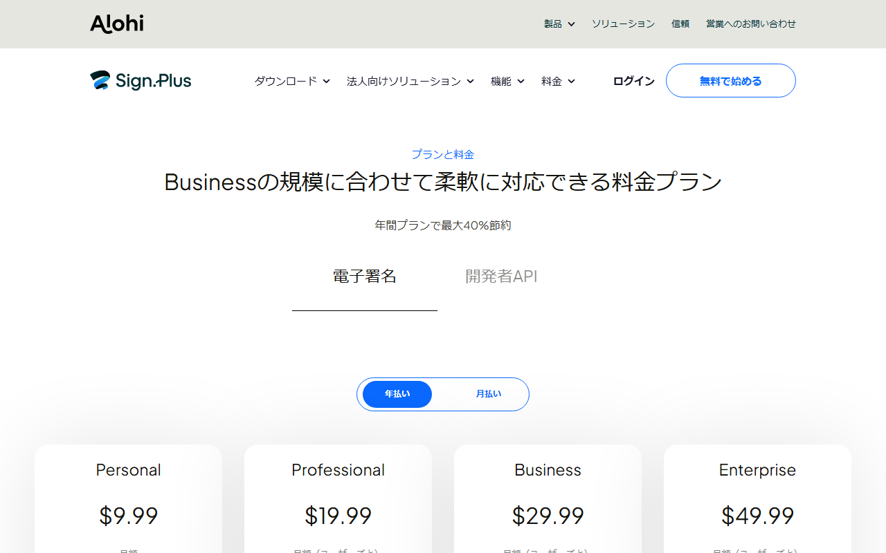
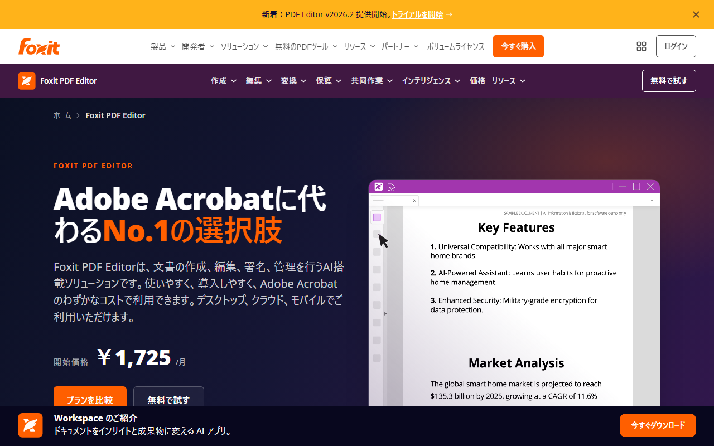
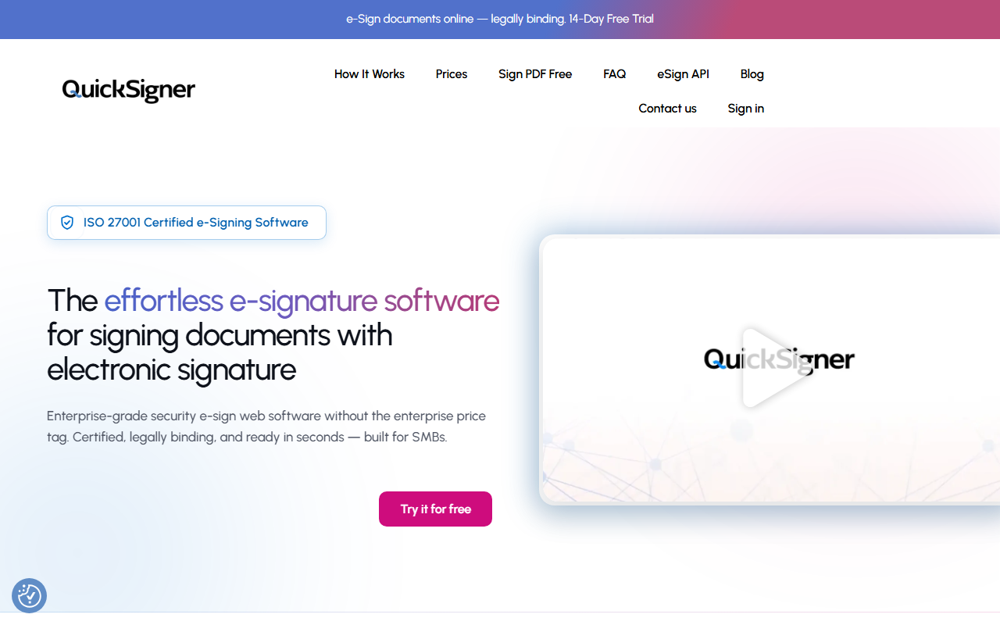

電子契約サービス比較｜海外製おすすめ5選と料金・日本語対応の選び方
電子契約サービスは、契約書の作成から保管までをオンラインで進めるツールです。海外の取引先へ署名を依頼する企業にも、PDFへの署名から始めたい事業者にも使われています。
料金の数え方や無料枠は、製品ごとに異なります。この記事では日本語対応や解約後の文書管理も含め、海外製5サービスの違いと選び方を紹介します。
海外製電子契約サービス5選の早見
- PandaDoc：年60文書無料／年払い月$19
- SignNow：7日試用／年払い月$8
- Sign.Plus：通算3件無料／年払い月$9.99
- Foxit eSign：14日試用／円建て
- QuickSigner：月5文書無料／月$5から
迷ったらSign.Plusがおすすめです。通算3件の署名依頼を無料で試せ、Web・iOS・AndroidのUIは日本語に対応しています。
日本語の料金表で、年払い・月払いと4つの有料プランを見比べられます。
電子契約サービスとPDF署名ツールは管理範囲が違う
まず決めるのは、署名以外にどこまで任せたいか。 文書作成から保管・検索まで扱い、社内承認や本人確認にも対応する製品があります。監査記録も残せます。完成したPDFへの署名だけで足りる会社では、候補が変わります。


電子契約は締結前後の業務まで含めて考える
契約業務を次の工程に分けると、必要な機能を見極めやすくなります。
- 締結前：文書作成、社内承認、送信
- 締結時：署名、本人確認、監査記録
- 締結後：保管、検索、更新、出力
PandaDocは、文書作成から署名依頼、保管までを一つの製品で扱えます。SignNowとSign.Plusは、署名依頼とテンプレートの機能が中心。社内承認や契約更新もまとめるなら、候補のプランに必要な機能があるか確かめましょう。
PDF署名は文書単位の署名を中心に考える
Foxit eSignは、envelope単位の署名依頼と監査記録が中心です。QuickSignerはPDFの署名依頼とテンプレートを扱い、ProfessionalではAPIも使えます。どちらも、署名者のアカウント登録は不要。文書の検索や期限更新は、既存の管理方法で補うことになります。
電子署名の法的効力は契約の種類と使い方で決まる
海外製という理由だけで可否は決まりません。判断材料は次の4つです。
- 電子署名法上の要件と契約の種類
- 本人確認と署名権限
- 監査記録
- 社内規程
重要な契約は、法務担当者や専門家へ相談してください。
電子契約サービスは5項目で選ぶ
比べる項目は次の5つです。
- どの工程まで任せるか
- 送信者と署名者の条件
- 日本語で使える範囲
- 利用人数と文書数を含めた総額
- 解約後の文書の扱い
この5項目を先に決めておけば、どの製品も同じ条件で比べられます。
契約書作成から保管までの必要範囲を決める
- 必須条件：作成、承認、署名、監査記録、保管、検索、出力の必要範囲
- 妥協できる条件：既存の文書管理で代替できる工程
- 見る場所：プラン別機能と文書の保存・出力案内
送信者と署名者の操作・登録条件を分けて見る
- 必須条件：送信者の席数と署名者の登録・費用・本人確認
- 妥協できる条件：社内だけで使う機能
- 見る場所：送信画面、依頼メール、完了文書
日本語UI・日本語サポート・署名画面を混同しない
- 必須条件：管理画面、署名画面、ヘルプ、個別サポートの言語
- 妥協できる条件：管理者だけ英語で操作できる場合
- 見る場所：試用アカウントと問い合わせ窓口
月額・ユーザー課金・送信上限・無料枠を合算する
- 必須条件：利用人数、月間文書数、1文書の受信者数
- 無料プラン：継続利用できる文書数・依頼数と機能制限
- 無料トライアル：期間、カード登録、自動課金への移行条件
- 見る場所：課金単位、年払い条件、送信上限、超過料金
解約後の文書・監査記録・出力方法を確認する
- 必須条件：署名済み文書と監査記録の出力
- 妥協できる条件：契約期間末までの閲覧
- 見る場所：請求設定、利用条件、返金方針、ダウンロード方法
海外製の電子契約サービスおすすめ5選
5製品は同じ電子署名サービスでも、文書作成の範囲と日本語対応が異なります。 決済方法と無料枠にも差があります。掲載順に優劣や知名度の意味はなく、文書作成まで扱う製品からPDF署名に特化した製品へと並べました。
PandaDoc：提案書や契約文書の作成から署名までまとめたい事業者向け

英語のトップページから、製品情報や連携、APIの各ページへ移れます。料金の確認と試用開始もここから進めます。
PandaDocのFree eSignは年間60文書まで。上限は1文書あたり受信者2人、テンプレート5件です。文書ストレージとユーザー数に制限はありません。
有料のStarterは年払いで$19、月払いで$35／ユーザー／月です。支払いにはクレジットカードかPayPalを使います。対応カードはVisa／Mastercard／American Express。請求書履歴は管理画面からダウンロードできます。管理画面と受信者画面の公式対応言語に日本語は含まれず、日本語での有人対応も案内されていません。チャットとチケットは24時間365日使えます。
公式サイトでは、無料枠の文書数と受信者数を見られます。Starterの文書作成機能も掲載されています。
SignNow（airSlate）：複数人で署名依頼を送りたいチーム向け

撮影時の画面にはaltaFlowの会社紹介ページが表示され、ログインとデモ依頼の導線があります。
SignNowに恒久無料プランはなく、無料トライアルは7日間です。Businessでは、追加料金なしでユーザーを増やせます。署名依頼枠はユーザーごとに年100 invitesで、アカウント内で共有する仕組み。超過分には追加料金がかかり、テンプレートとストレージは無制限です。
Businessは年払いで月$8、月払いで$20です。Web直販の初回支払いは、原則として30日以内なら返金を申請できます。大量に利用した場合は却下されることもあり、超過料金と営業担当経由の契約は対象外。Web直販はカード払いに対応し、請求書はMy AccountのBillingからダウンロードできます。日本発行カードの利用可否と対応ブランドは、公式情報では確定できません。
pdfFillerはairSlateの別製品です。SignNowの料金と年100 invitesの共有枠を見てください。
Sign.Plus（Alohi）：日本語の料金情報を見ながら少数の署名依頼から始めたい人向け

日本語の料金画面で、年払い・月払いの切り替えと4つのプランが表示されています。
Sign.PlusのFreeでは自分で署名でき、署名依頼は通算3件、テンプレートは1件までです。通算3件を超えて個人で使うならPersonalが候補。複数人で使う場合は、最大5ユーザーのProfessionalと比べましょう。Professional以上は署名依頼が無制限で、Professionalにはテンプレート10件が含まれます。
公式サイトと料金ページは日本語で読め、製品内UIもWeb・iOS・Androidで日本語を選べます。請求通貨はUSD／EUR／CHF／GBP。カードはJCBを含む主要ブランドに対応し、PayPal／Apple Pay／Google Payも使えます。請求書と領収書は、Plan & BillingのPayment Historyから取得可能です。ただし、日本発行カードを一律に使える保証はなく、日本語での有人サポートも案内されていません。Fax.PlusのFAX機能は、この比較の対象外です。
無料枠の通算3件と請求通貨を見られます。管理画面と署名画面の言語も試せます。
Foxit eSign：PDF業務の延長で日本円・国内カードを重視する人向け

日本語の製品ページには、月額の開始価格とプラン比較・無料試用への導線があります。
Foxit eSignには基本署名向けの無料機能があり、Essentialsをカード不要で14日間試せます。Essentialsは年間250 envelopes、Businessは5ライセンス以上。日本向けの購入画面には地域別価格が表示されるため、契約時の円建て金額で比べましょう。
日本向けページは円建てです。決済欄には主要カードブランドが並び、JCBにも対応。PayPalも掲示されています。eSign APIのアカウント言語には日本語があります。一方、Webアプリ全体を日本語で表示できるかは、公開情報だけでは分かりません。請求書の取得方法と日本語での有人サポートも案内されていません。
必要なenvelope数とライセンス数から、EssentialsかBusinessかを判断します。
QuickSigner：月5文書の無料枠から電子署名を試したい人向け

英語のトップページには、PDFへの無料署名と14日間試用への導線があります。
QuickSignerのFreeは月5文書、1依頼につき署名者3人、文書1件、最大5MBのPDFに対応します。Business以上は月間文書数が無制限で、14日間試せます。
Businessは$5／ユーザー／月、年払いは$48です。Professionalは$15／ユーザー／月、年払いは$144。Professionalには次の機能が含まれます。
- 最大50署名者
- 10文書／依頼
- eSign API
支払い後にはinvoice（請求書）が自動発行されます。日本語UI、日本語での有人サポート、日本から利用できるカードブランドは公式公開情報では確定できません。
無料枠で、月間件数／署名者数／PDF容量の上限を試せます。
料金と無料枠は文書数・署名依頼数・ユーザー数で比べる
表示月額だけでなく、年払い条件とユーザー課金も比べます。 文書または署名依頼の上限は、自社の利用量に当てはめてください。以下の円換算は、1ドル=159円換算の目安で、為替により変動します。

常設の無料プランと期間限定トライアルを分ける
- PandaDoc：Free eSignは年間60文書。トライアルのusage credits 10件は自動文書生成などに使う枠で、通常の署名送信数とは別
- SignNow：恒久無料プランなし。7日間の無料トライアル
- Sign.Plus：署名依頼は通算3件、テンプレート1件のFree。Personal以上は無料トライアルあり
- Foxit eSign：基本署名向けの無料機能。Essentialsはカード不要の14日間トライアル
- QuickSigner：月5文書のFree。BusinessとProfessionalは14日間トライアル
SignNowで無料になるのは試用期間だけです。常設の無料枠とは分けて比べましょう。
月払い・年払いとユーザー課金を確認する
- PandaDoc Starter：年払い$19（約3,021円）、月払い$35（約5,565円）／ユーザー／月
- SignNow Business：年払い月$8（約1,272円）、月払い$20（約3,180円）
- Sign.Plus Personal：年払い$9.99（約1,588円）、月払い$14.99（約2,383円）／月
- Foxit eSign Essentials：日本向けページは円建て。年間250 envelopes
- QuickSigner Business：月払い$5（約795円）／ユーザー／月、年払い$48（約7,632円）
月額換算だけでなく、年額の一括請求も見ておきましょう。利用人数を掛けた総額で比べます。
文書数・署名依頼数・受信者数の上限を見る
無料枠を数える単位は、製品ごとに違います。
- PandaDoc：年間文書数
- Sign.Plus：通算依頼数
- Foxit：envelope数
- QuickSigner：月間文書数
同じ「1件」でも、製品によって意味が異なります。
SignNowでは、ユーザーごとに年100 invitesが設定されます。この枠はアカウント内で共有され、ユーザーを追加しても継続課金はありません。ただし、共有枠を超えると追加料金がかかります。
PandaDocでは、Freeの年間60文書とStarter以上のユーザー課金を比べられます。
SignNowを見るときは、ユーザーごとの年100 invitesと超過料金を押さえましょう。
Sign.Plusでは、Freeの通算3件とProfessional以上の無制限枠を比較できます。
Foxit eSignでは、Essentialsの年間250 envelopesを見られます。Businessの最低ライセンス数も掲載されています。
QuickSignerでは、Freeの月5文書とBusiness以上の無制限枠を比べられます。
日本からの契約は日本語・支払い・請求書を分けて確認する
日本語の公式ページがあっても、製品内UIや個別サポートまで日本語とは限りません。 支払い方法と請求通貨、請求書の取得方法も分けて見ます。
日本語サイト・製品内UI・サポートを混同しない
- PandaDoc：管理画面と受信者画面の公式対応言語に日本語なし。24時間365日のチャット・チケットはあるが、日本語での有人対応は公式記載なし
- SignNow：管理画面は英語・フランス語・スペイン語。署名者の署名セッションは日本語に対応。日本語での有人対応は公式記載なし
- Sign.Plus：日本語サイトと料金ページがあり、Web・iOS・Androidの製品内UIで日本語を選択可能。日本語での有人対応は公式記載なし
- Foxit eSign：日本向けサイトと円建て料金ページあり。eSign APIは日本語コードに対応するが、Webアプリ全画面と有人サポートの日本語範囲は公式公開情報で確定できない
- QuickSigner：Professionalには優先サポートがある。日本語UIと日本語での有人対応は公式公開情報で確定できない
請求通貨と日本発行カードの対応を確認する
- PandaDoc：USD請求。Visa、Mastercard、American Express、PayPalに対応。JCBの公式案内なし
- SignNow：USD請求。Web直販はカード払いに対応するが、日本発行カードの可否とブランドは公式公開情報で確定できない
- Sign.Plus：USD、EUR、CHF、GBPから選択可能。JCBを含む主要カード、PayPal、Apple Pay、Google Payに対応するが、日本発行カードの一律利用保証はない
- Foxit eSign：日本向けページはJPY表示。JCBを含む国際ブランドとPayPalを掲示しているが、すべての日本発行カードの決済成功を保証するものではない
- QuickSigner：USD請求。日本発行カードの可否とブランドは公式公開情報で確定できない
請求書の取得方法と税務処理を確認する
請求書の取得先は製品ごとに異なります。
- PandaDoc：管理画面の請求書履歴
- SignNowのWeb直販：My AccountのBilling
- Sign.Plus：Plan & BillingのPayment History
- QuickSigner：支払い後にinvoice（請求書）を自動発行
Foxit eSignは、請求書の取得方法を公開していません。契約前に問い合わせておきましょう。税務上の扱いについては、必要に応じて税理士へ相談を。
Sign.Plusのサイトでは、日本語UIと請求通貨を見られます。JCBを含む決済手段と、請求書の取得場所も掲載されています。
Foxit eSignの料金ページには、円建て料金とカードブランドが載っています。必要なライセンス数も同じ画面で分かります。
PandaDocでは、対応カードに加えて、管理画面で請求書を保存する手順も確かめられます。
導入前に署名者の負担と解約後の文書を確認する
管理者側の機能だけでなく、署名を受ける相手の負担も見ます。 試用中に確かめる項目は次のとおりです。
- 署名者のアカウント登録
- 署名画面の言語
- 監査記録の内容
- 解約後の文書出力
未契約の5製品について、使用感や試用結果は断定しません。
相手側の登録・費用・モバイル操作を試す
送信者は同じテスト文書を使い、宛先設定と再送を試します。署名者は、依頼メールを開いてから署名が終わるまでの流れをたどります。5製品とも、通常の署名者はアカウント登録が不要。
SignNowの署名画面は、Webとモバイルで日本語に対応しています。Sign.PlusはWeb・iOS・Androidで日本語を選択可能。Foxit eSignとQuickSignerも端末から署名できます。日本語で表示される範囲は、公開情報だけでは不明。PandaDocの受信者画面も、公式対応言語に日本語がありません。
監査記録と署名済み文書の保存・出力を確認する
まずは、完了文書と監査記録のダウンロード。保存先も確かめておきます。PandaDocはFreeへの変更後も、既存文書と完成文書をダウンロード可能。SignNowは期限切れ後も読み取り専用となり、既存文書と監査証跡の閲覧・ダウンロードを続けられます。
Foxit eSignは契約終了後も6か月間文書を保持しますが、通常はアクセスできません。取得には書面での依頼が必要です。QuickSignerは有料プランの終了後2年以内なら、読み取り専用アクセスの再開を依頼できます。再開後に行えるのは、完成文書の閲覧と出力。Freeとtrialのデータ保持は非アクティブ後90日です。Sign.Plusは契約終了後の保持期間とアクセス条件を公開していません。
自動更新・ダウングレード・返金条件を確認する
PandaDocは管理画面から解約でき、月払いの変更やFreeへの移行は請求期間末に反映されます。SignNowのWeb直販はMy Accountから自動更新を停止でき、通常は期間末まで利用可能です。
Sign.Plusは更新24時間前までに解約しないと自動更新され、更新料は返金されません。Foxit eSignは原則として、更新日の14日前までに書面で解約を通知します。月払いは途中返金なし。初回年払いは、購入後14日以内で利用量などの条件を満たすと返金対象になる場合があります。QuickSignerの規約には自動更新の可能性が示されていますが、利用者側の解約操作と返金条件は非公開です。
PandaDocでは、Freeへの移行時期と文書のダウンロード方法が分かります。
SignNowを見るときは、購入チャネルごとの解約方法と返金の対象外になる条件を押さえましょう。
Sign.Plusでは更新24時間前の解約期限を見られます。終了後の文書アクセス条件は問い合わせが必要です。
Foxit eSignでは、14日前の書面通知と終了後の文書取得方法を確かめてください。
QuickSignerでは、試用終了日と自動更新の有無を見ておきましょう。解約操作と返金条件は公開されていないため、契約前に問い合わせる必要があります。
電子契約サービス選びでよくある質問
無料で使える電子契約サービスはある？
常設の無料枠または無料機能がある製品は次のとおりです。
- PandaDoc
- Sign.Plus
- Foxit eSign
- QuickSigner
ただし、年間文書数や通算依頼数など、制限の単位は製品ごとに異なります。SignNowの無料トライアルは7日間。有料契約前の試用であり、常設の無料枠ではありません。
海外製サービスを日本の契約に使える？
海外製という理由だけで可否は決まりません。法的効力は、電子署名法の要件と契約の種類を分けて考えます。本人確認と署名権限も別の確認項目。監査記録や社内規程を含め、法務担当者や専門家へ相談してください。日本語表示と請求条件は、法的効力とは別の話です。
電子契約サービスとPDF編集ソフトの署名は何が違う？
電子契約サービスは、文書の作成から保管・検索までを扱う場合があります。途中で行うのは、承認や署名、監査記録の保存です。PDF編集ソフトは作成済みPDFへの署名が中心。台帳や更新を別の方法で管理できるかが分かれ目になります。
クラウドサイン・GMOサイン・freeeサインを掲載していないのはなぜ？
今回は、日本から直接契約できる海外製5製品に対象を絞っています。市場全体の順位を示す比較ではありません。日本語の導入支援や国内向け請求を優先する場合は、国内製品も別枠で検討します。
まとめ：候補を2つに絞り、同じ契約書で試す
必要な機能と日本語・支払い条件をもとに、候補を2つに絞ります。 無料枠またはトライアルでは、同じ契約書を同じ相手へ送ります。自社で実際に行う作業を基準に比べましょう。
必要な管理範囲を1つ決める
最初に、優先する作業を1つ選びます。
- 文書作成から保管まで任せる
- チームで署名依頼を送る
- 完成したPDFに署名する
そのうえで、日本語や決済方法などの譲れない条件を1つ加えます。無料条件、署名者側の操作、文書出力も候補です。
候補を2製品に絞る
- 文書作成から署名まで：PandaDoc
- チームで署名依頼
- 年100 invitesの共有枠を使う：SignNow
- 最大5ユーザーで日本語UIを重視する：Sign.Plus
- 円建て・JCBを含む決済ブランド・PDF署名：Foxit eSign
- 月5文書から無料で試す：QuickSigner
同じ文書・署名者・確認項目で試す
同じテスト文書を同じ条件で送り、次の順に試します。
- 通知が届くか
- 迷わず署名できるか
- 完了文書と監査記録を取得できるか
- 必要な形式で出力できるか
試用終了日と自動更新の有無も記録し、同じ条件で比べてください。
文書作成から署名までまとめるなら、PandaDocの無料枠とStarterを比べます。
チームで署名依頼を送るなら、SignNowのユーザーごとの年100 invitesと超過料金を計算します。
日本語UIと少数の無料依頼を重視するなら、Sign.PlusのFreeとPersonalを比べます。複数人で使う場合は、最大5ユーザーのProfessionalも候補です。
円建てやJCB対応を重視するなら、Foxit eSignが候補です。年間のenvelope数も見ておきましょう。
月5文書の範囲から始めるなら、QuickSignerの無料枠で一連の流れを確かめます。
関連するnote
- PandaDocの料金と無料枠を詳しく知りたい方へ、公開後の候補はこちらです：https://note.com/saas_serivce/n/n51d612aac3fc